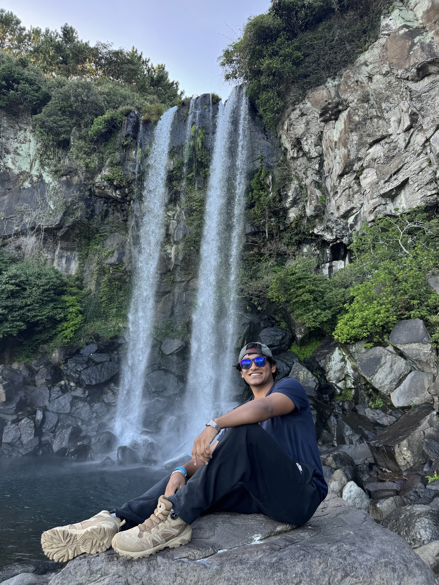

Yatin Kare
Computer Science at the University of Georgia.
I build with Python, TypeScript & Go.
Into AI agents, developer tools and self-hosting.
- Building
- Hermes Agent Home Lab
- Reading
- Zero to One

Computer Science at the University of Georgia.
I build with Python, TypeScript & Go.
Into AI agents, developer tools and self-hosting.